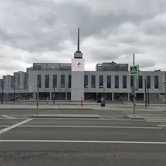

Места по типу · данные на 15 октября
Крыши, панорамы и места с видом
69 мест с видом на город: смотровые площадки, панорамные рестораны и бары на высоте, крыши и набережные — например, «Bamboo.Bar», «Twins Garden» и «Воробьёвы горы». Ещё 77 готовых планов с видом — особенно хороши на закате.
- 69 мест
- 77 планов
- 9 округов
Места с видом 40 из 69
Пресненская наб., 8, стр. 1
Ресторан в Москва-Сити с панорамной террасой, зеленью и фонтанами.
Подробнее и маршрут: Bamboo.BarПозвать сюда: Bamboo.Bar
Фото: BpbAlonka, CC BY-SA 3.0 · Wikimedia Commons
Страстной бул., 8А
Две звезды Michelin 2021
Фермерские продукты и вид на центр с седьмого этажа.
Подробнее и маршрут: Twins GardenПозвать сюда: Twins Garden
Фото: Tamara Ivanova-Issayeva, CC BY-SA 4.0 · Wikimedia Commons
ул. Косыгина, смотровая площадка
Лесистый склон над Москвой-рекой. У главного здания МГУ — смотровая с видом на Лужники и Сити.
Подробнее и маршрут: Воробьёвы горыПозвать сюда: Воробьёвы горы
Фото: Niklitov, CC BY-SA 4.0 · Wikimedia Commons
Новорязанская ул., 23, стр. 1
60 корнеров в бывшем троллейбусном депо и большая крыша-терраса. До 23, в пт–сб до 00.
Подробнее и маршрут: Три вокзала. ДепоПозвать сюда: Три вокзала. Депо
Фото: Svetlov Artem, CC BY 4.0 · Wikimedia Commons
Смоленская пл., 3 (16 этаж)
Звезда Michelin 2021
Ресторан со звездой Michelin под стеклянным куполом с видом на центр. 12:00–00:00.
Подробнее и маршрут: White RabbitПозвать сюда: White Rabbit
Фото: Wikimaniawikimania, CC BY-SA 4.0 · Wikimedia Commons
Воробьёвы горы — Лужники
Кабинки над Москвой-рекой от Воробьёвых гор к Лужникам — короткий полёт с видом на город.
Подробнее и маршрут: Канатная дорогаПозвать сюда: Канатная дорога
Фото: Правительство Москвы, CC BY 4.0 · Wikimedia Commons
Пресненская наб., 8
Небоскрёбы на Пресненской набережной: смотровые, рестораны на высоте и прогулка по мосту «Багратион».
Подробнее и маршрут: Москва-СитиПозвать сюда: Москва-Сити
Фото: Igorkhait (cropped by Siktira), CC BY 4.0 · Wikimedia Commons
Новодевичий пр., 1
Ансамбль XVI–XVII веков над прудом — одна из самых красивых панорам Москвы.
Подробнее и маршрут: Новодевичий монастырьПозвать сюда: Новодевичий монастырь
Фото: Ivtorov, CC BY-SA 4.0 · Wikimedia Commons
ул. Академика Королёва, 15, корп. 2
Смотровая на 337 метрах со стеклянным полом. Вход 9:00–22:00, билет от 1 300 ₽, нужен паспорт.
Подробнее и маршрут: Останкинская башняПозвать сюда: Останкинская башня
Фото: Klodklodklod77, CC BY-SA 4.0 · Wikimedia Commons
Смоленская ул., 5 (23-й этаж)
Новое
Ресторан на 23-м этаже отеля у Смоленской: за окнами высотка МИД, Арбат и огни Сити. Недёшево, но за вечерней Москвой сверху сюда и приходят.
Подробнее и маршрут: ПанорамаПозвать сюда: Панорама
Фото: Vlsr1, CC0 · Wikimedia Commons
ул. Варварка, 6
Парящий мост над Москвой-рекой и вид на Кремль. Сам парк открыт круглосуточно.
Подробнее и маршрут: Парк «Зарядье»Позвать сюда: Парк «Зарядье»
Фото: Alina Vozna, CC BY-SA 4.0 · Wikimedia Commons
ул. Перерва, Марьино
Большой парк на набережной в Марьине: велодорожки, спортплощадки и вид на Москву-реку.
Подробнее и маршрут: Парк 850-летия МосквыПозвать сюда: Парк 850-летия Москвы
Фото: Brateevsky, CC BY-SA 3.0 · Wikimedia Commons
ул. Академика Королёва, 15, корп. 1
Новое
Вращающийся ресторан на Останкинской башне: за обедом вся Москва медленно проплывает за окном. Попасть можно только с билетом на смотровую площадку, бронируй заранее.
Подробнее и маршрут: Седьмое небоПозвать сюда: Седьмое небо
Фото: Klodklodklod77, CC BY-SA 4.0 · Wikimedia Commons
Театральный пр., 5, стр. 1
Бесплатная смотровая на крыше Центрального детского магазина с видом на Лубянку и Кремль.
Подробнее и маршрут: Смотровая ЦДМПозвать сюда: Смотровая ЦДМ
Фото: A.Savin, CC BY-SA 3.0 · Wikimedia Commons
ул. Петровка, 2
В гиде Michelin 2021
Брассери на пятом этаже ЦУМа с видом на Большой театр.
Подробнее и маршрут: BURO.TSUMПозвать сюда: BURO.TSUM
Фото: A.Savin, Free Art License · Wikimedia Commons
1-й Красногвардейский пр., 21, стр. 2
Русская кухня на 85-м этаже башни «ОКО» — один из самых высоких ресторанов Европы.
Подробнее и маршрут: RUSKIПозвать сюда: RUSKI
Фото: mos.ru, CC BY 4.0 · Wikimedia Commons
ул. Крылатские Холмы, 14
Холмы с видом на Москву-реку и гребной канал, рядом велотрек.
Подробнее и маршрут: Крылатские холмыПозвать сюда: Крылатские холмы
Фото: A.Savin, CC BY-SA 3.0 · Wikimedia Commons
ул. Воздвиженка, 3/5
Главная библиотека страны: из окон некоторых залов открываются бесплатные виды на Кремль и центр.
Подробнее и маршрут: Ленинская библиотекаПозвать сюда: Ленинская библиотека
Фото: krassotkin, CC BY 3.0 · Wikimedia Commons
ул. Большая Садовая, 5
Ресторан и терраса на крыше гостиницы «Пекин» у Маяковской.
Подробнее и маршрут: ОблакоПозвать сюда: Облако
Фото: Vladimir OKC, CC BY-SA 3.0 · Wikimedia Commons
Старая Басманная ул., 23/9, стр. 1
Усадьба декабристов на Старой Басманной: лепнина, люстры, полуротонда с видом на улицу и выставки современных художников.
Подробнее и маршрут: Усадьба Муравьёвых-АпостоловПозвать сюда: Усадьба Муравьёвых-Апостолов
Фото: NVO, CC BY-SA 3.0 · Wikimedia Commons
Новодмитровская ул., 1
Бывший хлебозавод: 15 кафе, десятки магазинов и шоурумов, крыши и бары. Вход свободный.
Подробнее и маршрут: Хлебозавод №9Позвать сюда: Хлебозавод №9
Фото: Bezik, CC BY-SA 4.0 · Wikimedia Commons
Кутузовский просп., 2/1, стр. 1
Итальянский ресторан на 29-м этаже высотки «Украина» с видом на Москву-реку.
Подробнее и маршрут: BuonoПозвать сюда: Buono
Фото: Lite, CC BY-SA 3.0 · Wikimedia Commons
Пресненская наб., 12 (башня «Федерация», 89 этаж)
Самая высокая смотровая площадка Европы — 327 метров над Москвой.
Подробнее и маршрут: PANORAMA360Позвать сюда: PANORAMA360
Фото: Igor3188, CC BY-SA 4.0 · Wikimedia Commons
Ленинградский пр., 15, стр. 11
Книжный на третьем этаже Музея импрессионизма с видом на город. Вход по браслету, без билета.
Подробнее и маршрут: Подписные изданияПозвать сюда: Подписные издания
Фото: Sergey A. Demidov, CC BY 4.0 · Wikimedia Commons
парк Тюфелева роща, Москва
Современный парк на месте ЗИЛа: террасы, водоёмы и смотровой холм.
Подробнее и маршрут: Тюфелева рощаПозвать сюда: Тюфелева роща
Фото: A.Savin, Free Art License · Wikimedia Commons

пр. Андропова, 11, корп. 2
Отреставрированный речной вокзал с набережной, крышей и экспозицией о реке.
Подробнее и маршрут: Южный речной вокзалПозвать сюда: Южный речной вокзал
Фото: MBH, CC BY-SA 4.0 · Wikimedia Commons
Моховая ул., 15/1, стр. 1
Звезда Michelin 2021
Икорный бар и русская кухня в «Национале» с видом на Кремль.
Смоленская ул., 8
Звезда Michelin 2021
Морепродукты на верхнем этаже отеля Azimut с панорамой города.
Ермакова Роща, 1, стр. 1
Круговая смотровая с видом на город и коворкинг с мягкими зонами — вход свободный.
Подробнее и маршрут: Смотровая iCITYПозвать сюда: Смотровая iCITY
Красная пл., 3 (ГУМ)
Новое
Кафе в ГУМе с окнами на Красную площадь и Кремль. Завтраки с 9 утра, вечером живая музыка — красивая точка, чтобы начать или закончить прогулку по центру.
Космодамианская наб., 52, стр. 6 (34-й этаж)
Новое
Круглый бар на 34-м этаже отеля у Павелецкой: обзор на 360° и закат над Москвой-рекой. Стол у окна не бронируют — приходи пораньше, открыто с 16:00.
Лужнецкая наб., 6, стр. 1
Новое
Ресторан на пришвартованной яхте у Лужников: рыба, морепродукты и вид на Воробьёвы горы, летом открыта терраса на носу. Дорого — вариант для особого повода.
Большая Филёвская ул., 22 (парк «Фили»)
Новое
Девять трасс среди высоких деревьев Филёвского парка, самая высокая — 22 м с видом на Москву-реку, есть зиплайн. 10:00–18:00, касса до 17:00, в дождь закрыто.
Подробнее и маршрут: ПандаПарк ФилиПозвать сюда: ПандаПарк Фили
Краснопресненская наб., 12А
Новое
Ресторан-яхта на Краснопресненской набережной: в панорамные окна видно реку, гостиницу «Украина» и огни Сити. Рыбное меню, вечером свечи — для красивого свидания.
Моховая ул., 15/1 (гостиница «Националь»)
В гиде Michelin 2021
Гранд-кафе с видом на Кремль и русской кухней. Работает круглосуточно.
Берсеневская наб., 16, стр. 9
Новое
Ресторан у «Красного Октября» со средиземноморской кухней: с террасы и из окон виден храм Христа Спасителя за рекой. Цены высокие — место для особого вечера.
Пресненская наб., 2 (ТРЦ «Афимолл Сити», 6-й этаж)
Новое
Шесть панорамных кортов под стеклянным куполом «Афимолл Сити» — играешь среди небоскрёбов. Корт — 10 000 ₽/ч, для новичков есть тренировки с тренером.
ул. Варварка, 6, стр. 7
Ресторан в «Зарядье» в духе 60-х: кухня 15 республик и вид на Кремль.
Столярный пер., 3
Ресторан-бар на крыше у «Улицы 1905 года»: вечером — коктейли и закат над городом.
ул. Александра Солженицына, 17, стр. 1
Тихий закрытый дворик с видом на храм — одна из самых уютных веранд Таганки.
Подробнее и маршрут: Интеллигенция 2.0Позвать сюда: Интеллигенция 2.0


Планы с видом на город 12 из 77
- Смотровая iCITY · Бесплатная смотровая и коворкинг · м. Шелепиха
- 18 минут пешкомBamboo.Bar · Ресторан с террасой
Встретить закат на бесплатной круговой смотровой iCITY, а потом спуститься в квартал на террасу Bamboo.Bar с зеленью и фонтанами — удобно прямо после работы.
Открыть план: Бесплатная смотровая и терраса в СитиПозвать сюда: Бесплатная смотровая и терраса в Сити
Фото: BpbAlonka, CC BY-SA 3.0 · Wikimedia Commons
- Театр Вахтангова · Театр · м. Смоленская
- 15 минут пешкомПанорама · Панорамный ресторан
Спектакль в Театре Вахтангова на Арбате, потом минут пятнадцать пешком до Смоленской — и ужин на 23-м этаже, где за окнами высотка МИД и огни Сити.
Открыть план: Вахтангов и ужин на 23-м этажеПозвать сюда: Вахтангов и ужин на 23-м этаже
Фото: A.Savin, Free Art License · Wikimedia Commons
- Останкинская башня · Смотровая площадка · м. Бутырская
- 4 минуты пешкомСедьмое небо · Ресторан на телебашне
Сначала смотровая Останкинской башни со стеклянным полом, потом столик во вращающемся «Седьмом небе»: пока ужинаете, под вами медленно проплывает вся Москва. Билеты и бронь — заранее.
Открыть план: Годовщина на 337 метрахПозвать сюда: Годовщина на 337 метрах
Фото: Klodklodklod77, CC BY-SA 4.0 · Wikimedia Commons
- Пионер · Кинотеатр · м. Выставочная
- 12 минут пешкомBamboo.Bar · Ресторан с террасой
Фестивальное кино на языке оригинала в «Пионере» на Кутузовском, а после сеанса — по мосту «Багратион» в Сити, ужинать на террасе Bamboo.Bar среди небоскрёбов.
Открыть план: Кино в «Пионере» и терраса в СитиПозвать сюда: Кино в «Пионере» и терраса в Сити
Фото: BpbAlonka, CC BY-SA 3.0 · Wikimedia Commons
- Дом музыки · Концертный зал · м. Павелецкая
- 2 минуты пешкомCity Space · Панорамный бар
Классика, джаз или орган в Доме музыки, а потом лифт на 34-й этаж соседнего отеля: круглый бар City Space смотрит на реку на все 360°. Столы у окна не бронируют — идите сразу после концерта.
Открыть план: Концерт и бар на 34-м этажеПозвать сюда: Концерт и бар на 34-м этаже
Фото: Nevermind2, общественное достояние · Wikimedia Commons
- Красная площадь · Площадь · м. Площадь Революции
- 3 минуты пешкомBosco Cafe · Кафе с видом на Кремль
Красная площадь утром, пока нет толп и очередей, а с 9 часов — завтрак в Bosco Cafe в ГУМе, где окна смотрят прямо на Кремль.
Открыть план: Красная площадь до толп и завтракПозвать сюда: Красная площадь до толп и завтрак
Фото: mos.ru, CC BY 4.0 · Wikimedia Commons
- Парк 850-летия Москвы · Парк · м. Марьино
- 6 минут пешкомЧеддер · Пивной ресторан
Пройтись по набережной Парка 850-летия Москвы, а потом в «Чеддер»: пиво и сидр в фирменных бокалах, бургеры и трансляции — бармены расскажут про каждый сорт.
Открыть план: Набережная в Марьине и сидрПозвать сюда: Набережная в Марьине и сидр
Фото: Brateevsky, CC BY-SA 3.0 · Wikimedia Commons
- Sky Padel · Падел · м. Выставочная
- 4 минуты пешкомBamboo.Bar · Ресторан с террасой
Корт на четверых под стеклянным куполом «Афимолла» — играешь в окружении башен Сити, а потом ужин на террасе Bamboo.Bar прямо в квартале.
Открыть план: Падел среди небоскрёбовПозвать сюда: Падел среди небоскрёбов
Фото: BpbAlonka, CC BY-SA 3.0 · Wikimedia Commons
- Патриарший мост · Пешеходный мост · м. Кропоткинская
- 1 минута пешкомLui · Ресторан с видом на реку
Закат на Патриаршем мосту с видом на Кремль, а на другом берегу, у «Красного Октября», — ужин в Lui, откуда за рекой виден храм Христа Спасителя.
Открыть план: Патриарший мост и ужин у рекиПозвать сюда: Патриарший мост и ужин у реки
Фото: NVO, общественное достояние · Wikimedia Commons
- Le Mans · Картинг · м. Шелепиха
- 8 минут пешкомСмотровая iCITY · Бесплатная смотровая и коворкинг
- 10 минут пешкомRUSKI · Ресторан на 85-м этаже
Десятиминутный заезд по 650-метровой трассе Le Mans у «Шелепихи», потом бесплатная смотровая iCITY и ужин на 85-м этаже башни «ОКО» в RUSKI.
Открыть план: После работы: картинг и 85-й этажПозвать сюда: После работы: картинг и 85-й этаж
Фото: mos.ru, CC BY 4.0 · Wikimedia Commons
- Pixel Quest · Игровая комната · м. Бауманская
- 8 минут пешкомТри вокзала. Депо · Фудмолл
В Pixel Quest прыгаете по светящимся клеткам и проходите уровни вместе — весело и совсем не страшно, — а потом фудмолл «Три вокзала. Депо» в бывшем троллейбусном парке.
Открыть план: Световой пол и фудмолл в депоПозвать сюда: Световой пол и фудмолл в депо
Фото: Svetlov Artem, CC BY 4.0 · Wikimedia Commons
- Парк «Красная Пресня» · Парк · м. Деловой центр
- 5 минут пешкомЧаiка · Ресторан-яхта
Круг по старинному парку «Красная Пресня» с прудами и мостиками, а потом ужин при свечах на яхте «Чаiка»: в окнах река, гостиница «Украина» и огни Сити.
Открыть план: Тихий парк и ужин на яхтеПозвать сюда: Тихий парк и ужин на яхте
Фото: Akkit, CC BY-SA 3.0 · Wikimedia Commons


Как позвать
- Выбери план, место или событие — в карточке адрес, цены и маршрут в Яндекс Картах.
- Нажми «Позвать сюда» — соберётся приглашение-игра для свидания или голосование для компании.
- Отправь ссылку в любой мессенджер: тебе ответят, а компания отметит, куда и когда может. Бесплатно и без регистрации.